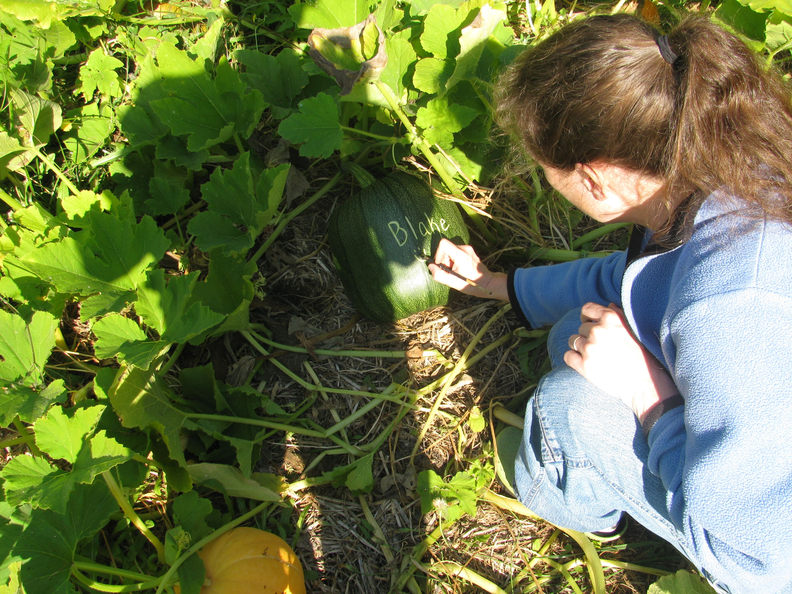
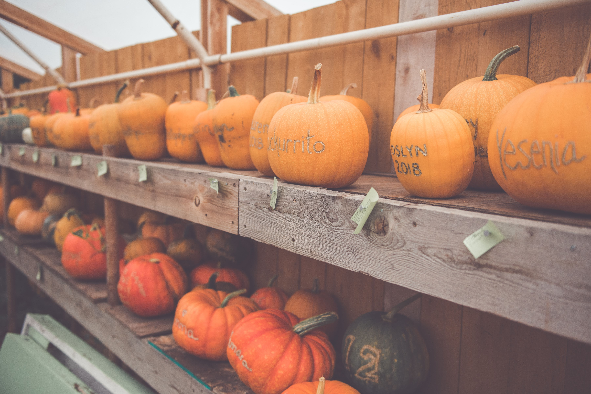

Personalizing in the Pumpkin Patch
What are Personalized Pumpkins?
Pumpkins have a dual purpose each autumn. Some folks use them for decorations, others for food. With our personalization service we would like to offer you the opportunity
to use your pumpkin for both! Personalized pumpkins are a unique way to decorate your home, business or office, while maintaining the integrity of the pumpkin to be used as
food at the end of the season.
Imagine this.... your family visits our farm and searches through the pumpkin patches to "discover" the pumpkins
which have been personalized just for you!* You take home your personalized pumpkins to use as decorations throughout the fall... and then for
Thanksgiving, you turn them into very yummy pumpkin scones, delicious pumpkin bread or a hearty pumpkin soup! WOW! True dual-use pumpkins!
*Clues to pumpkin locations
are available upon request.
How does it work? When the pumpkin is still small and green, we scratch your name or other message into the flesh. As the pumpkin turns orange and hardens, a "raised crust"
forms on the pumpkin where it has been scratched. Since the shell of the pumpkin has not been compromised, the integrity of the inner flesh is maintained. You can use it for decoration,
and then later for food!

Personalized Pumpkins Waiting to be Picked Up
Ordering Personalized Pumpkins
The number of pumpkins available for personalization each year is limited, and ordering early is strongly encouraged (We have to scratch in the personalization while pumpkins are
still young and green).
You can order by email (pumpkins@creekhousefarm.com), by regular mail (Creek House Farm PO BOX 422 Manchester, WA 98353), or by using our online
form (link is at the bottom of this page). The cost is $5.50 per personalization* (due when you place your order), plus the weight of the pumpkin (paid when you pick up your pumpkin).
You must include EXACTLY what you want to be scratched onto the pumpkin, and whether you prefer a medium, large or giant pumpkin (keep in mind, you will pay for your pumpkin by
weight when you pick it up and larger pumpkins can be very heavy. Be sure you request the size you want. We don't want anyone disappointed, or overwhelmed when you come to the
pumpkin patch!). To complete your order you can either mail your personalization fee ($5.50 per pumpkin + additional letters @ $.25 ea + 9.0% sales tax) to Creek House Farm P.O.
Box 422 Manchester, WA 98353 or you can pay with Paypal (after completing the online order form). All orders will be completed upon receipt of the personalization fee.
Notice: personalized pumpkin orders DO NOT include admission to the farm; you can schedule a farm visit or a farm pickup.
*Note: We are happy to personalize pumpkins with more than 10 letters. However, out of consideration for our time, we charge $.25 for each additional letter past 10.
Example: "Samuel" $5.50; "Rose" $5.50; "Welcome" $5.50, "Happy Harvest" (1st 10 letters $5.50, + 2 additional letters @ $.25 each = $6.00.)
PLEASE INCLUDE 9.0% SALES TAX WITH YOUR PAYMENT.
We typically use our Connecticut Field Pumpkins for personalization. If you would like to upgrade to a
specialty, soup, or sugar pumpkin, please note that when you order. Please note that Specialty, soup, and sugar pumpkins are more expensive than field pumpkins.
Please
note: organic pumpkins and the personalization process are natural. We will be sure to
keep spelling and punctuation exactly as you order it.... but the rest will be a natural product. We cannot guarantee perfection, (nor would we attempt to) as that part
is not within our control. As an attempt to help keep your pumpkins from prematurely decomposing, we remove them from the patch and store them safely out of the elements until
your arrival.
Your pumpkin will be beautiful... as it is created... but not without imperfections... perfect is relative to expectation and usually only comes
in plastic 🙂.
Additionally, we ABSOLUTELY reserve the right to refuse to personalize any pumpkin with a message or image we find offensive, or feel may be offensive
to any of the guests attending our pumpkin patch.
Feel free to contact us if you
have any questions.
Click Here to Order Personalized Pumpkins!